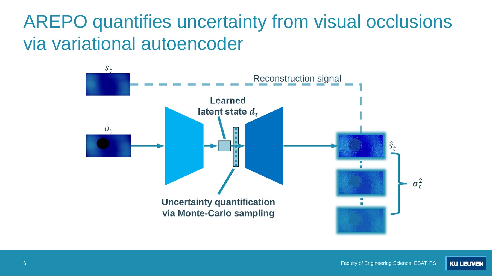
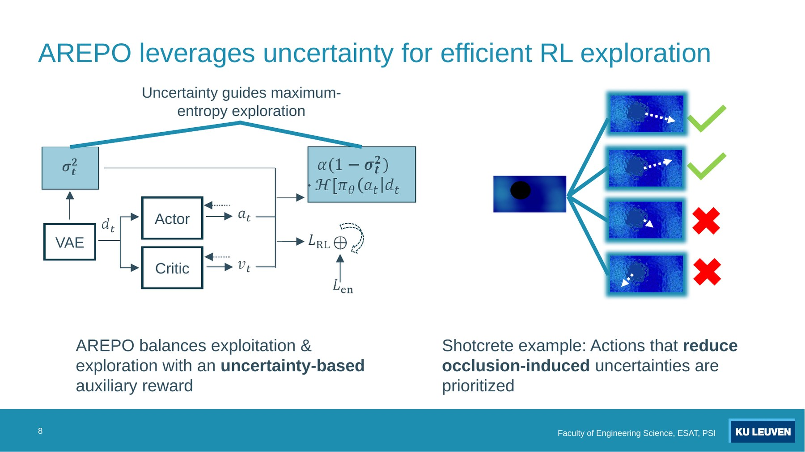
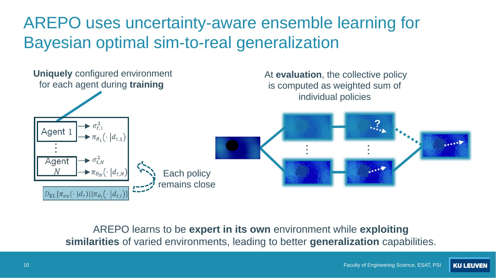
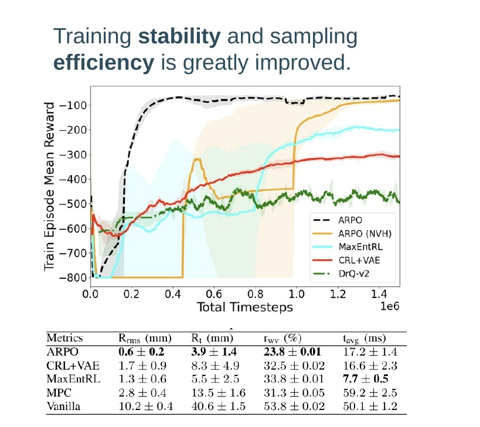
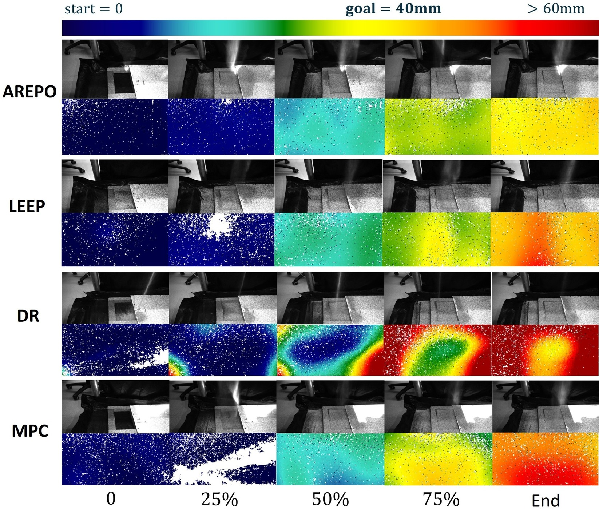

Uncertainty-quantifying VAE
Visual observations are compressed into denoised latent states while reconstruction uncertainty estimates occlusion-induced ambiguity.
1 KU Leuven, Dept. Electrical Engineering, Research unit Processing Speech and Images, Leuven, Belgium
2 KU Leuven, Dept. Mechanical Engineering, Research unit Robotics, Automation and Mechatronics, Leuven, Belgium
AREPO revisits VAE-based visual reinforcement learning through uncertainty quantification and uses an uncertainty-aware ensemble to improve robot learning under severe visual occlusion, noisy observations, and sim-to-real shift.

Visual observations are compressed into denoised latent states while reconstruction uncertainty estimates occlusion-induced ambiguity.

Uncertainty is used to steer exploration and prioritize actions that reduce partial-observability-induced uncertainty.

The ensemble combines policies according to uncertainty, emphasizing agents expected to generalize better under target-domain occlusions.
A proxy task reproduces extreme partial observability with a sand-sprinkling robot, a target region, and a vision system that must recover target-surface geometry under occlusion.
The target surface is only partially visible during operation. Dust and plume occlusions create corrupted heightmaps and can lead to poor control performance without uncertainty awareness.

